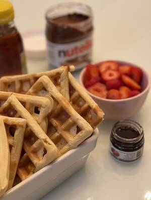
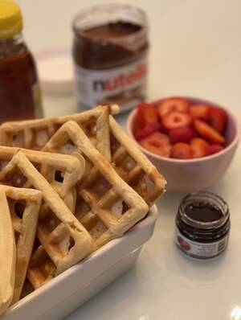

Classic Waffles
 

A lovely, crispy waffle perfect for the morning.
- Cook: 15 mins
- Total: 25 mins
- Prep: 1 mins
- servings: 5
- Yield: 10 to 12 Waffles
Nutrition Facts
Per Serving: 379 calories; protein 10.2g; carbohydrates 47.6g; fat 16.2g;
cholesterol 112.8mg; sodium 899.1mg.
Ingredients
- 2 cups all-purpose flour
- 1 teaspoon salt
- 4 teaspoons baking powder
- 2 tablespoons white sugar
- 2 eggs
- 1 ½ cups warm milk
- ⅓ cup butter, melted
- 1 teaspoon vanilla extract
Steps
- In a large bowl, mix together flour, salt, baking powder and sugar; set aside. Preheat waffle iron to desired temperature
- In a separate bowl, beat the eggs. Stir in the milk, butter and vanilla. Pour the milk mixture into the flour mixture; beat until blended.
- Ladle the batter into a preheated waffle iron. Cook the waffles until golden and crisp. Serve immediately.